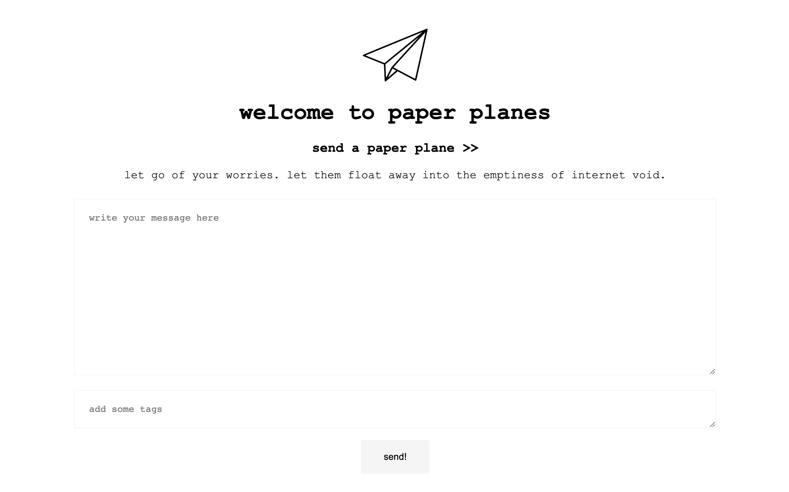
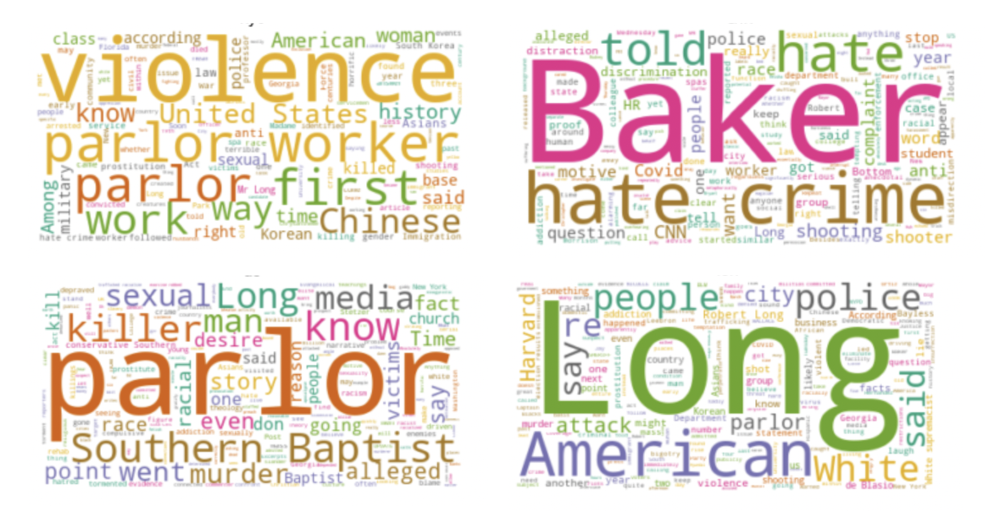

M A X I N E : W U
Hi, I'm Maxine Wu. I'm currently in my first year studying Computer Engineering at UCLA. My current interests include cybersecurity and robotics. I am currently open for opportunities for research as well as internships around the SF/LA area.
Come find me at maxinewu [dot] ucla [dot] edu.
B U I L D S
-
Paper Planes
(Above: Screenshot from the home page of the web app)
- Built with Mongo DB and Node.js, previously hosted with Heroku
- Social expriment, inspired by Lauv's Blue Thoughts project
- Web app that allows people to share their thoughts and "send" them off virtually like paper planes as well as other people to "pick" them up and find them
-
Analyzing Atlanta
(Above: Example word clouds generated during the data exploration stage)
- Built with Python (pandas, matplotlib, sklearn, gensim, etc)
- Analyes news source coverage of the Atlanta 2021 spa shootings
- Explores variations in tone and emotion in American news coverage
- Highlights how a singular topic can be approached from many different angles
R E A D S
In my free time, I enjoy reading pretty much anything.
- Atomic Habits by James Clear
- Bone by Fae Myenne Ng
- The Summer I Turned Pretty by Jenny Han
- Behind Rebel Lines by Seymour Reit
Wow! You've scrolled so far! It was nice getting to know you, as always feel free to shoot me an email on anything work related. Cheers :-)